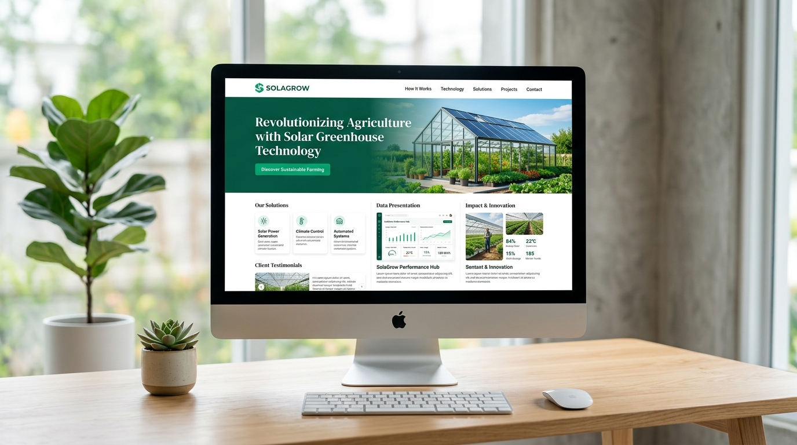
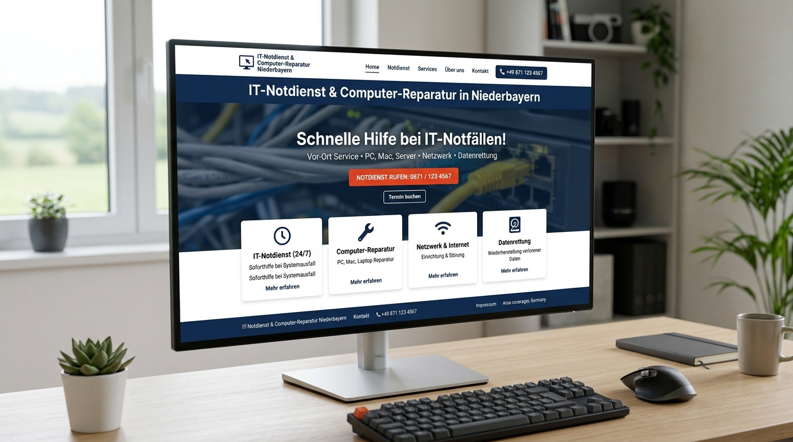
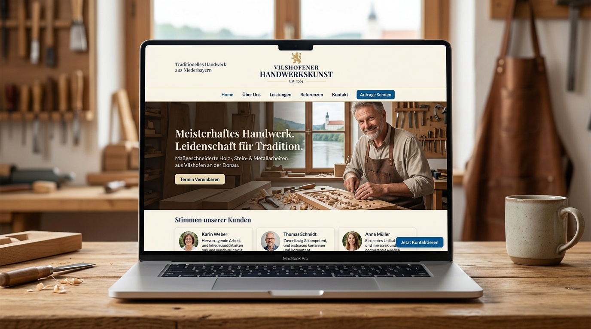
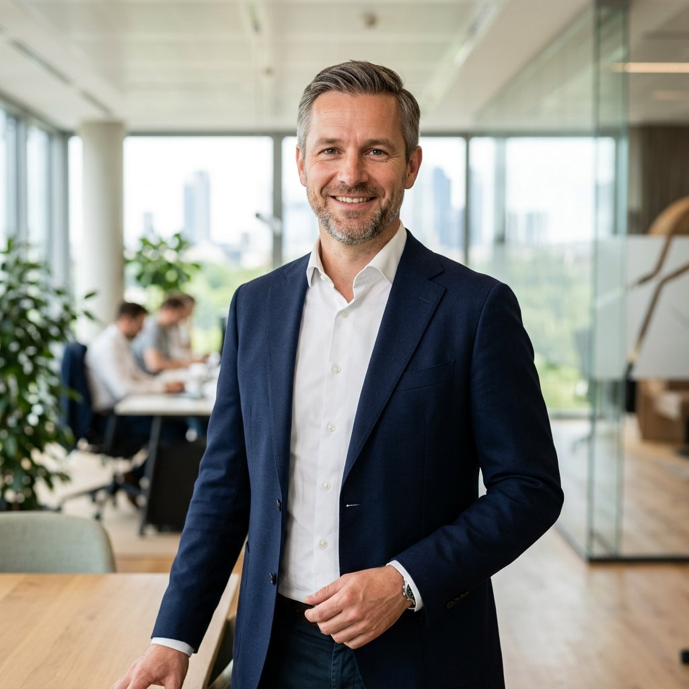

SolaGrow Website
Modernes, nachhaltiges Webdesign und schlanke Webentwicklung für innovative solare Gewächshaustechnik. Fokus auf Vertrauen, Datenpräsentation und internationale Reichweite.
Wir konzipieren und entwickeln maßgeschneiderte, blitzschnelle Webauftritte, die neue Kunden gewinnen, Ihr Unternehmen glaubwürdig repräsentieren und bei Google nachhaltig ganz oben stehen.

Viele Unternehmen kämpfen mit überladenen Webseiten, langsamen Ladezeiten und unpersönlichen Agenturen. Webzech geht einen anderen Weg: Wir verbinden fundierte technische Webentwicklung mit zeitlosem, zielgerichtetem Design und direkter, menschlicher Kommunikation.
Bei uns sprechen Sie nicht mit wechselnden Vertriebsmitarbeitern, sondern direkt mit den Gründern Awais Abid und Werner Polatschek. Wir begleiten Sie von der ersten Idee bis zur kontinuierlichen Betreuung Ihres digitalen Erfolgs.
Jedes Unternehmen ist einzigartig. Wir bieten Ihnen fokussierte Fachleistungen aus einer Hand — präzise abgestimmt auf Ihre geschäftlichen Ziele.
Robuster, sauberer und semantischer Programmcode. Wir erstellen performante Websites mit modernsten Webstandards ohne unnötigen Ballast — für maximale Stabilität und Langlebigkeit.
Durchdachte Benutzeroberflächen mit minimalistischer Ästhetik. Wir gestalten Webdesigns, die auf allen Geräten perfekt wirken, Ihre Markenidentität stärken und Besucher in Kunden verwandeln.
Individuelle WordPress-Websites, die einfach zu pflegen, sicher abgesichert und blitzschnell sind. Keine schwerfälligen Themes von der Stange, sondern schlanke Custom-Entwicklung.
Hochkonvertierende Zielseiten für Angebote, Marketing-Kampagnen und lokale Dienstleister. Psychologisch geführtes Layout mit klarem Fokus auf Anfragen und Kontaktaufnahmen.
Ganzheitliche Suchmaschinenoptimierung: Von technischer On-Page-Optimierung über Core Web Vitals bis hin zu zielgerichtetem Local SEO für Ihre Wunschregionen in Bayern und Deutschland.
Wir glauben nicht an starre Standardpakete oder künstliche Preisrechner. Jedes Vorhaben hat eigene Anforderungen und Budgets. Sprechen Sie einfach unverbindlich mit uns.
Ein erprobtes Vorgehen in 9 klaren Phasen stellt sicher, dass Ihr Projekt termintreu, budgetstabil und in erstklassiger Qualität umgesetzt wird.
Wir lernen uns persönlich kennen, verstehen Ihre Ziele, Zielgruppe und die bisherigen Herausforderungen Ihres Webauftritts.
Detaillierte Untersuchung Ihrer Wettbewerber, der relevanten Suchbegriffe und technischer Ausgangsbedingungen.
Festlegung der Seitenarchitektur, Benutzerführung und Inhaltsstruktur für optimale Übersichtlichkeit und Konversion.
Individuelle Ausarbeitung des Erscheinungsbilds: Typografie, Farbwelt, Bildsprache und responsive Ansichten für Mobil und Desktop.
Präzise technische Programmierung mit validem HTML5, optimiertem CSS3 und schlankem JavaScript für unschlagbare Ladezeiten.
Implementierung aller relevanten Meta-Tags, OpenGraph-Daten, strukturierter Schemas und suchmaschinenfreundlicher Ladeperformance.
Akribische Prüfung auf verschiedenen Browsern (Safari, Chrome, Firefox), Gerätegrößen, Barrierefreiheit und DSGVO-Konformität.
Reibungsloser Übergang auf Ihre Wunschdomain mit SSL-Verschlüsselung, DNS-Setup und Indexierungsanfrage bei Google.
Wir lassen Sie nach dem Start nicht allein: Zuverlässige Wartung, inhaltliche Updates und kontinuierliche Weiterentwicklung.
Einblicke in aktuelle Arbeiten: Von nachhaltigen Technologieprojekten bis hin zu lokalen Dienstleistern mit messbar mehr Neukundenanfragen.
Modernes, nachhaltiges Webdesign und schlanke Webentwicklung für innovative solare Gewächshaustechnik. Fokus auf Vertrauen, Datenpräsentation und internationale Reichweite.

Konversionsstarke Landingpage für Computer-Reparatur und Geschäftskunden-Betreuung. Optimiert auf direkte Anrufe, Soforthilfe und Top-Rankings in regionalen Suchergebnissen.

Kompakter, vertrauensvoller WordPress-Auftritt für einen regionalen Handwerksbetrieb. Einfache eigene Pflege, barrierefreier Aufbau und schnelle Kontaktanfragen per WhatsApp und Telefon.
Keine anonyme Großagentur. Wir stehen mit unserem Namen für Zuverlässigkeit, handwerkliche Qualität und eine partnerschaftliche Zusammenarbeit auf Augenhöhe.
Awais verbindet technisches Programmier-Know-how mit einem feinen Gespür für moderne, minimalistische Ästhetik. Er sorgt dafür, dass Ihre Website nicht nur fantastisch aussieht, sondern im Code sauber strukturiert, barrierefrei und zukunftssicher aufgebaut ist.
Spezialisiert auf: HTML5, CSS3, semantische Webstandards, Performance-Optimierung und Responsive UI/UX.

Werner bringt langjährige unternehmerische Erfahrung, Projektmanagement und geschäftliche Weitsicht in jedes Projekt ein. Er stellt sicher, dass Ihre Website exakt Ihre geschäftlichen Ziele widerspiegelt und die Zusammenarbeit klar und verlässlich verläuft.
Spezialisiert auf: Kundenkommunikation, Projektsteuerung, strategische Beratung und praxisnahe Prozessbegleitung.
Mit Sitz in Vilshofen an der Donau betreuen wir Unternehmen in ganz Bayern sowie in wirtschaftsstarken Ballungsräumen bundesweit.
Hier beantworten wir die wichtigsten Fragen zu Kostenstruktur, Ablauf und Betreuung.